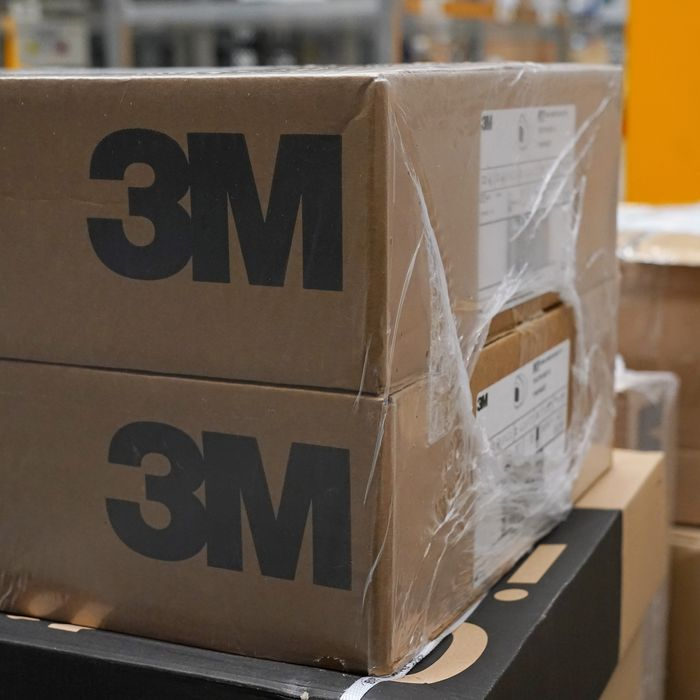

The White House Has Erected a Blockade Stopping States and Hospitals From Getting Coronavirus PPE
Whenever you start to think that the federal government under Donald Trump has hit a moral bottom, it finds a new way to shock and horrify.
Over the last few weeks, it has started to appear as though, in addition to abandoning the states to their own devices in a time of national emergency, the federal government has effectively erected a blockade — like that which the Union used to choke off the supply chains of the Confederacy during the Civil War — to prevent delivery of critical medical equipment to states desperately in need.At the very least, federal authorities have made governors and hospital executives all around the country operate in fear that shipments of necessary supplies will be seized along the way.In a time of pandemic, having evacuated federal responsibility, the White House is functionally waging a war against state leadership and the initiative of local hospitals to secure what they need to provide sufficient treatment.
Yesterday, a letter published by the
New England Journal of Medicine highlighted the extraordinary measures that had to be taken to secure the delivery into Massachusetts of equipment that had been bought and paid for.The
NEJM, which featured the letter in its COVID-19 Notes series, is far from a platform of partisan alarm or hysteria — it is among the most sober and high-minded professional journals in the country.It’s worth reading the correspondence, written by an executive running a small health system, at some length:
Our supply-chain group has worked around the clock to secure gowns, gloves, face masks, goggles, face shields, and N95 respirators.These employees have adapted to a new normal, exploring every lead, no matter how unusual.Deals, some bizarre and convoluted, and many involving large sums of money, have dissolved at the last minute when we were outbid or outmuscled, sometimes by the federal government.Then we got lucky, but getting the supplies was not easy.
A lead came from an acquaintance of a friend of a team member.After several hours of vetting, we grew confident of the broker’s professional pedigree and the potential to secure a large shipment of three-ply face masks and N95 respirators.The latter were KN95 respirators, N95s that were made in China.We received samples to confirm that they could be successfully fit-tested.Despite having cleared this hurdle, we remained concerned that the samples might not be representative of the bulk of the products that we would be buying.Having acquired the requisite funds — more than five times the amount we would normally pay for a similar shipment, but still less than what was being requested by other brokers — we set the plan in motion.Three members of the supply-chain team and a fit tester were flown to a small airport near an industrial warehouse in the mid-Atlantic region.I arrived by car to make the final call on whether to execute the deal.Two semi-trailer trucks, cleverly marked as food-service vehicles, met us at the warehouse.When fully loaded, the trucks would take two distinct routes back to Massachusetts to minimize the chances that their contents would be detained or redirected.
Hours before our planned departure, we were told to expect only a quarter of our original order.We went anyway, since we desperately needed any supplies we could get.Upon arrival, we were jubilant to see pallets of KN95 respirators and face masks being unloaded.We opened several boxes, examined their contents, and hoped that this random sample would be representative of the entire shipment.Before we could send the funds by wire transfer, two Federal Bureau of Investigation agents arrived, showed their badges, and started questioning me.No, this shipment was not headed for resale or the black market.The agents checked my credentials, and I tried to convince them that the shipment of PPE was bound for hospitals.After receiving my assurances and hearing about our health system’s urgent needs, the agents let the boxes of equipment be released and loaded into the trucks.But I was soon shocked to learn that the Department of Homeland Security was still considering redirecting our PPE.Only some quick calls leading to intervention by our congressional representative prevented its seizure.I remained nervous and worried on the long drive back, feelings that did not abate until midnight, when I received the call that the PPE shipment was secured at our warehouse.
In this instance, the executive managed to secure the supplies, but what is most horrifying about his account is that this experience was not all that surprising to him — he expected interference from federal officials, and did everything he could (including staging the shipment in food-service trucks to avoid detection) to get around that interference.
Those measures do not seem unusual, horrifyingly enough.Last month, 3 million masks ordered by the state of Massachusetts were seized by the federal government.Last week, the Chicago
Sun-Times reported that the governor of Illinois, J.B. Pritzker, was arranging secret chartered flights of supplies as a way of outmaneuvering federal interference.'The governor has clearly outlined the challenges this administration has faced as we’ve worked around the clock to purchase PPE for our health-care workers and first responders,' a spokesperson for the governor told the paper.'The supply chain has been likened to the Wild West, and once you have purchased supplies, ensuring they get to the state is another Herculean feat,' he continued.'These flights are carrying millions of masks and gloves our workers need.They’re scheduled to land in Illinois in the coming weeks and the state is working to ensure these much-needed supplies are protected and ready for distribution around the state.'A source 'knowledgeable about the flights' told the paper that the governor didn’t want to be more open about the shipments 'because we’ve heard reports of Trump trying to take PPE in China and when it gets to the United States.'
This is not just the federal government telling states they are on their own, as it has done repeatedly over the last few weeks — a sign that the president, often thought to harbor authoritarian impulses, will invariably choose to unburden himself of responsibility even when seizing it would offer remarkable new powers — and itself a moral outrage demonstrating incredible political sadism, given that states lack the resources of the federal government to pay for this stuff.That’s in part because, in many cases, states are legally barred from deficit spending, which means in times of crisis, especially those producing huge budget shortfalls through collapsing tax revenue, they are functionally unable to respond at all.In such situations, the federal government is designed to serve as a backstop, but over and over again throughout this crisis, the White House has said states will get little to no help — that they are entirely on their own.(The federal medical stockpile isn’t meant for the states, as Jared Kushner has said, as though the country is anything more than its states.)
On top of that outrage, the Feds are bidding against states who are trying to buy their own supplies, and refusing to interfere in those auctions between states, which have driven prices up by ten times or more.But while you might think that was as bad as federal management of this crisis could be, it is not.This new outrage is deeper: Even those states that are trying to manage their own resources, buying equipment themselves with incredibly scarce resources to aid in a time of crisis, are being stopped, and those resources seized on the way to delivery.
You could call this piracy.You could call it sanctions.The federal government is choking supply chains to states like it chokes supply chains to Iran and North Korea.These blockades aren’t as complete as those surrounding sanctioned regimes, of course, and some amount of the disruption may be honest confusion in a time of crisis.But the disruption is being brought about by federal interference, and unlike the kind of disruptions you’d want to engineer against antagonistic states, the purpose seems completely unclear — indeed the policy is inexplicable and indefensible.
Which may be one reason why no explanation has been given.We don’t know where these supplies are going.We don’t know on what grounds they are being seized, or threatened with seizure.What business do the DHS and FEMA have with ventilators and PPE purchases by governors and local hospitals?'This is like a story out of the last days of the Soviet Union,' David Frum wrote on Twitter of the
NEJM
letter.'This is what it means to be a failed state,' wrote the essayist Umair Haque, echoing him.In the absence of an explanation, it is hard to come to any conclusion other than that this is simply mafia government, exerting control for the sake of control, not in spite of but because of the crisis-led demand, and squeezing the American people, as they die in hospital beds and attend — with inadequate protection — to the sick and scared.
Posted On: 2020-04-19T00:00:00
Posted By: David Wallace-Wells

Content Date: 2020-04-19
Download Date: 2021-05-30
Document ID: L0C04CNIC